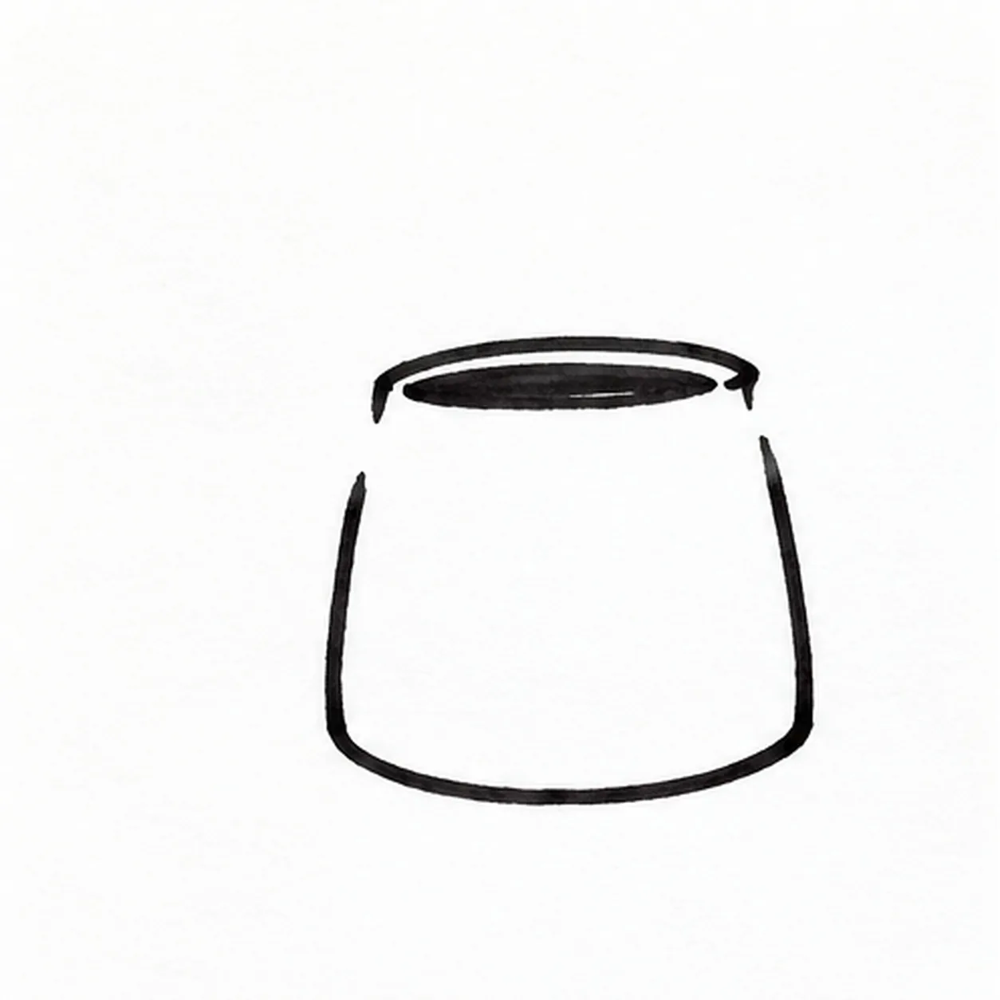
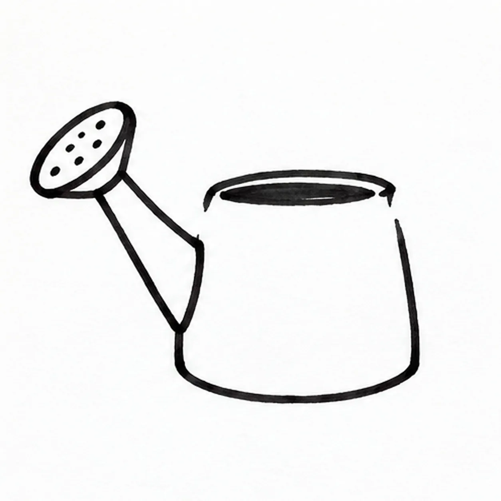
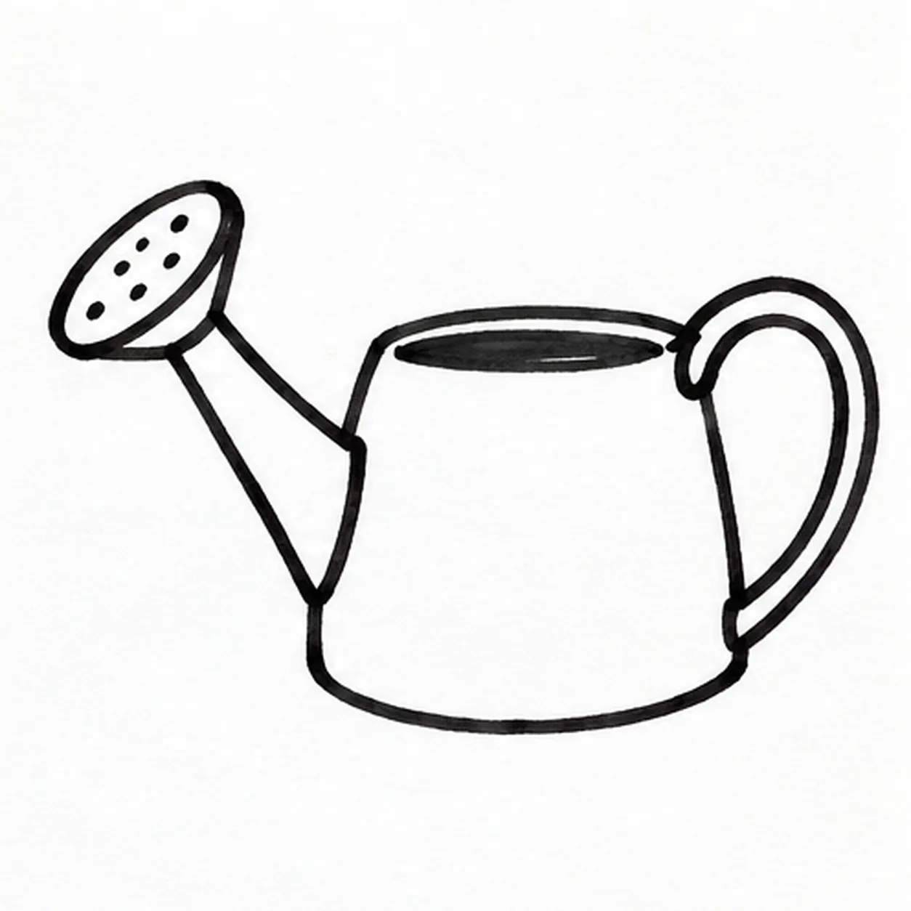
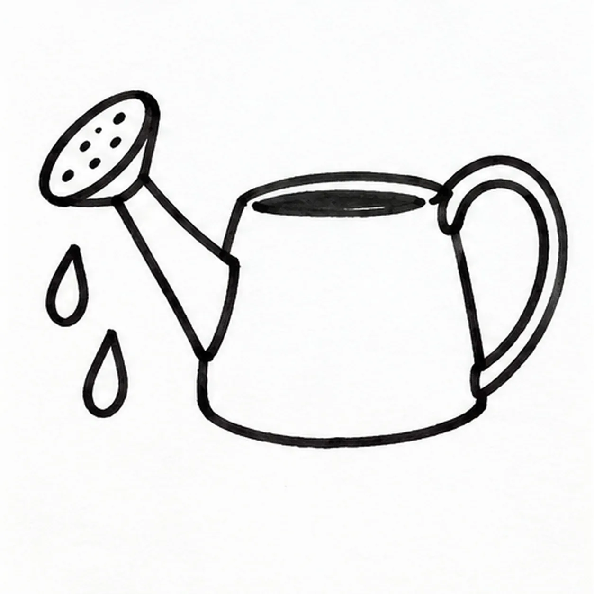
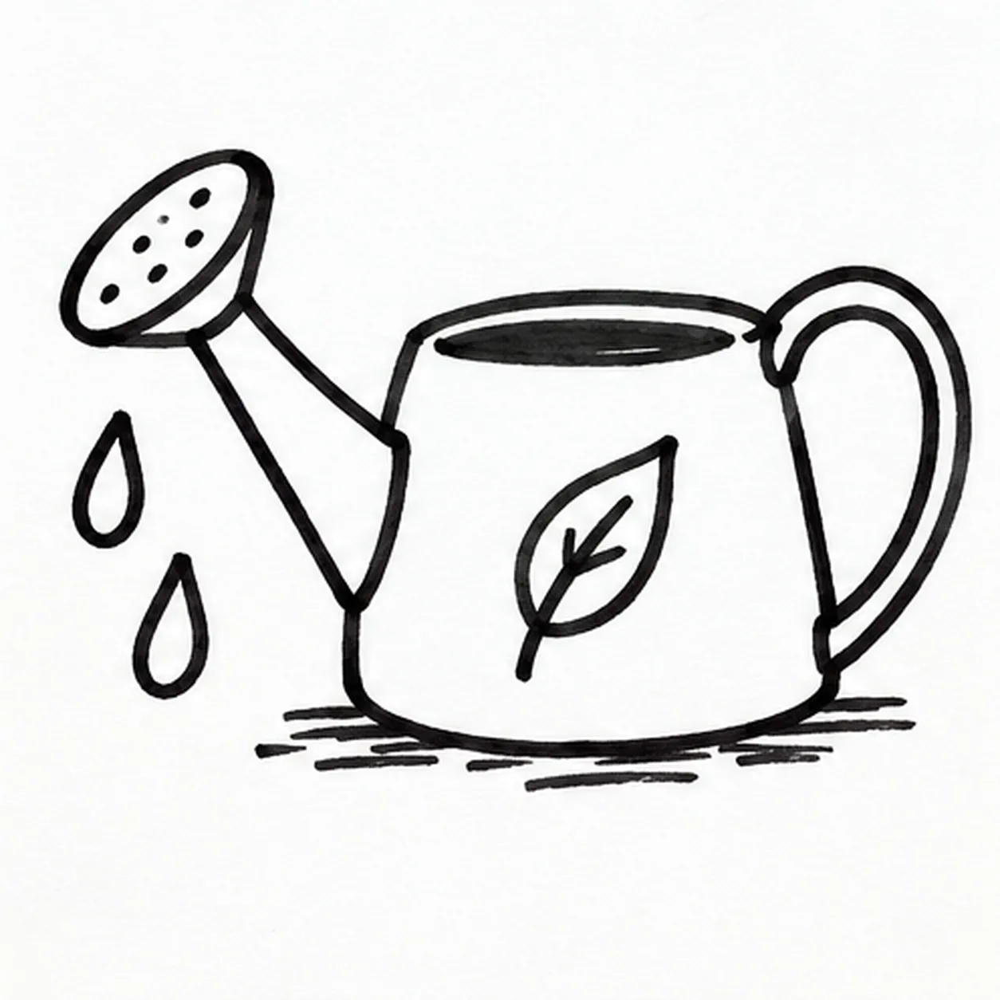

Marker ready?
Let's draw a watering can
Treat this as one playful practice round: sketch the idea loosely, simplify the shapes, then commit with confident marker outlines and bright fills.
-
01

Shape the little can
Draw a low rounded can body and a narrow oval top opening. Leave short breaks at the upper left and right sides where the spout and handle will join.
Marker tip: Ghost the top oval twice before inking; the two side breaks keep later attachments from covering a line you already drew.
-
02

Aim the watering spout
From the left opening, pull two tapered lines up and left. Join them to a tilted oval sprinkler rose and dot its small holes inside the oval.
Marker tip: Make the rose wider than the spout tip so it reads as a watering head even at card size.
-
03

Loop the carrying handle
From the right upper break, curve out and down, then return to the lower right body. Add a parallel inner curve to make one thick open loop.
Marker tip: Rotate the page for the handle arc so both edges stay smooth without mechanical symmetry.
-
04

Drop two splashes
Under the rose head, draw exactly two separate water teardrops angled down and left. Leave paper around each so they do not touch the spout or can.
Marker tip: Vary their heights slightly, but keep the two drops large enough to color cleanly.
-
05

Mark the can and ground
Inside the body, draw one simple leaf and a short center vein. Put a few broken shadow strokes under the can without crossing either water drop.
Marker tip: Keep the leaf away from the rim and base, then use short horizontal shadow marks to anchor the can.
-
06
Fill the garden colors
Once the black marker dries, fill the can, spout and handle teal, the rose mustard yellow, both drops bright blue, and the leaf green. Leave narrow white streaks in the marker fills.
Marker tip: Pull the teal strokes across the rounded body and work from each outline inward. Try a different garden palette next time while keeping the same shapes.